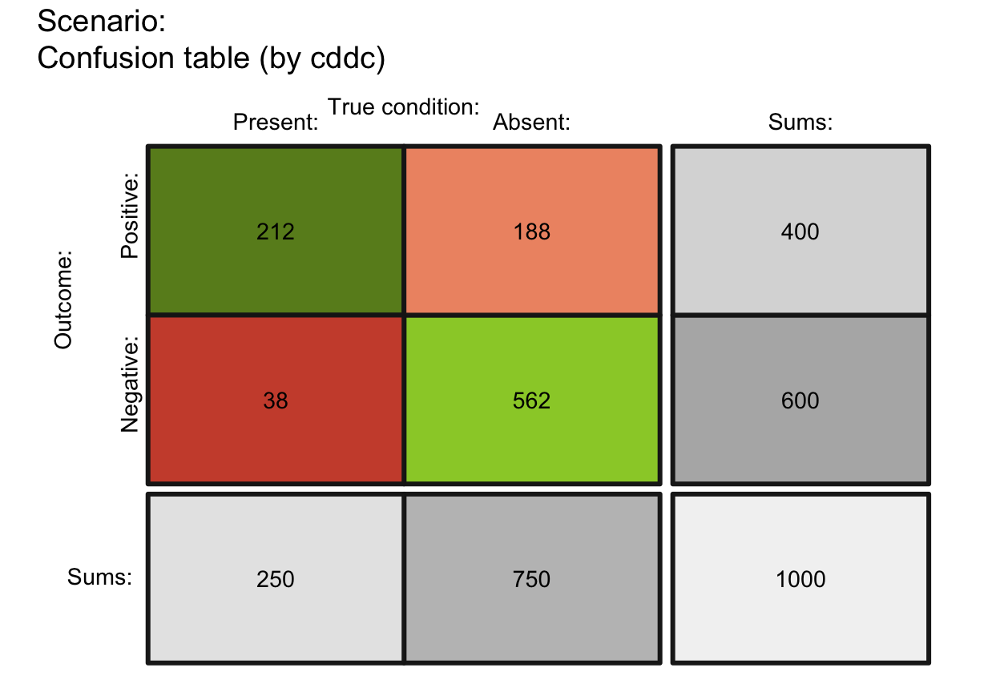
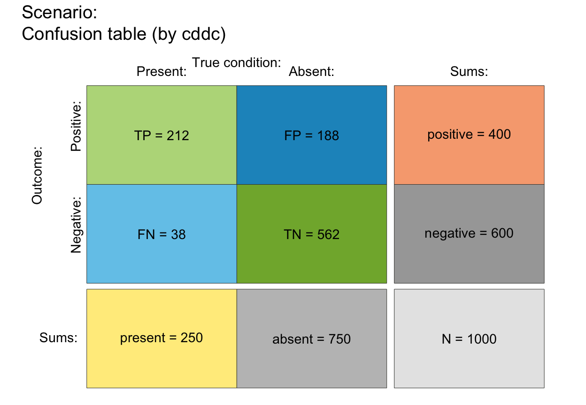
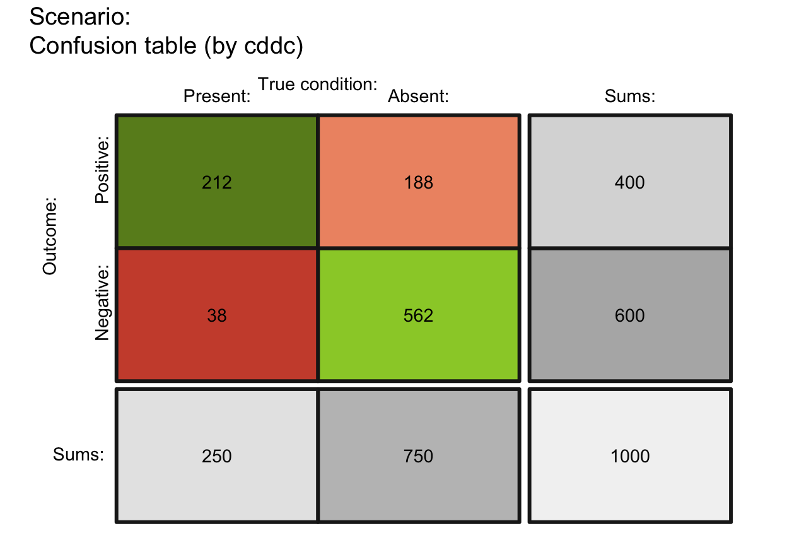
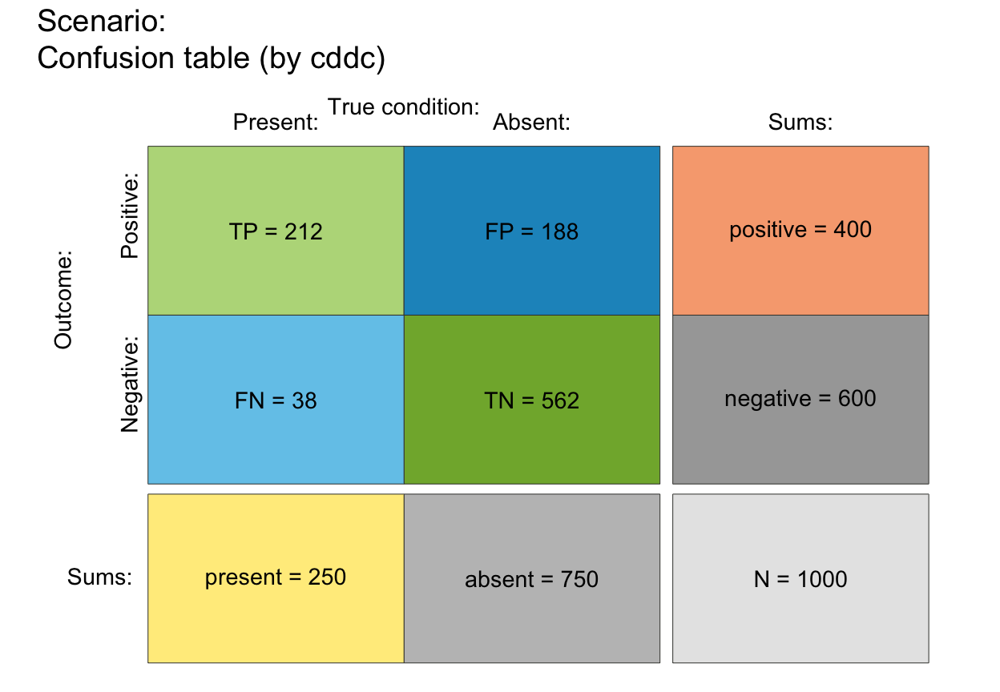
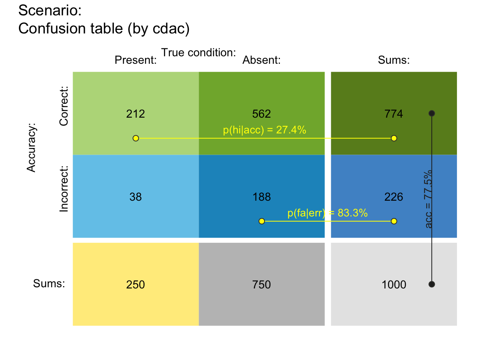
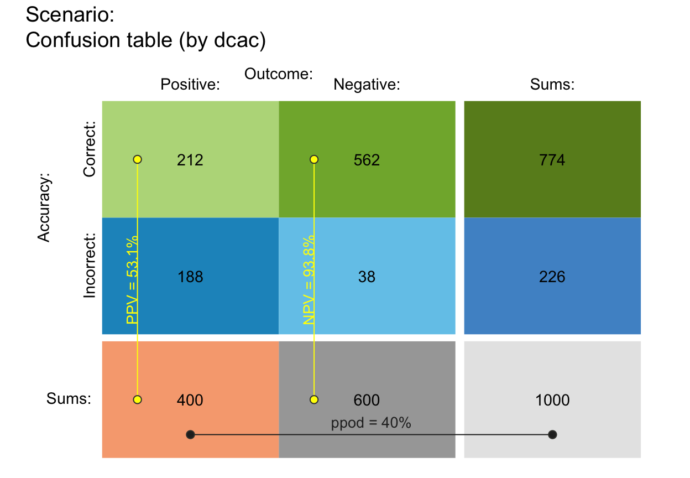
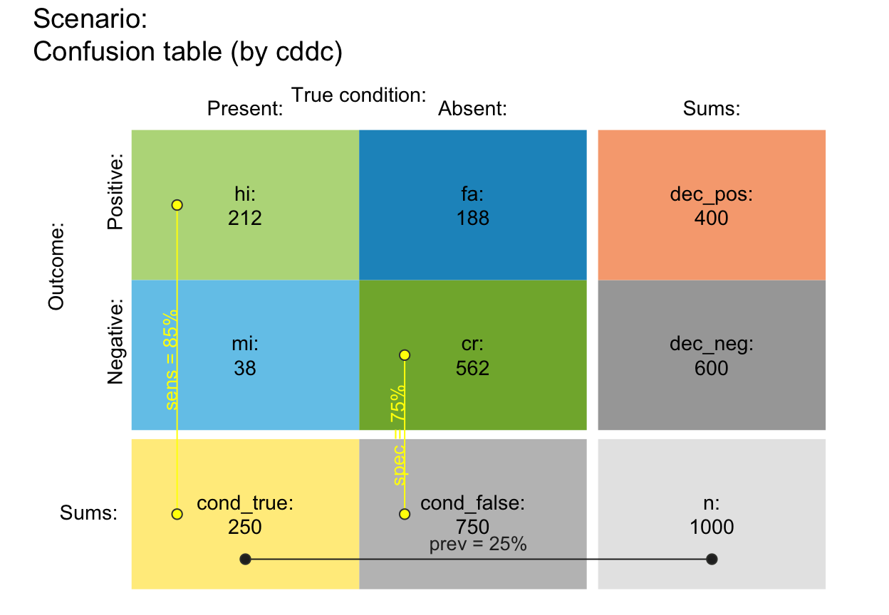
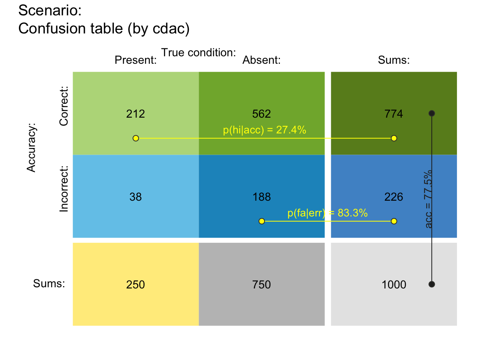
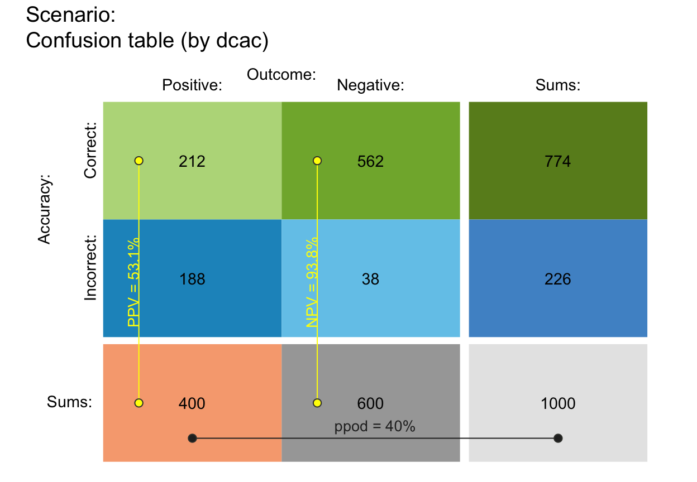
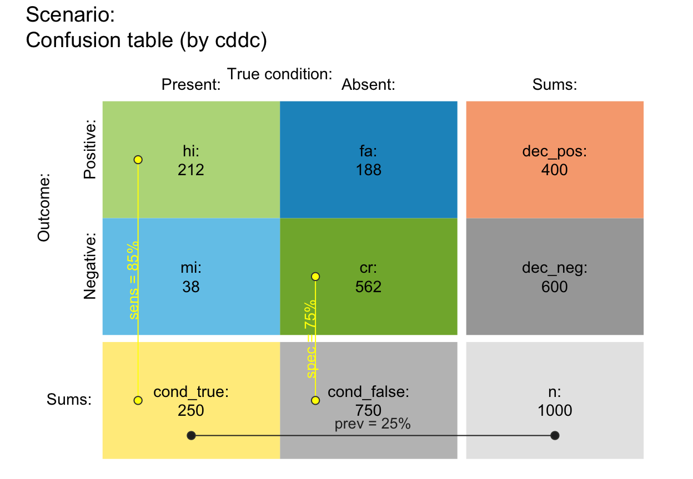

plot_tab plots a 2 x 2 contingency table
(aka. confusion table) of
4 classification cases (hi, mi,
fa, cr)
and corresponding row and column sums.
Usage
plot_tab(
prev = num$prev,
sens = num$sens,
mirt = NA,
spec = num$spec,
fart = NA,
N = num$N,
by = "cddc",
p_split = "v",
area = "no",
scale = "p",
round = TRUE,
sample = FALSE,
f_lbl = "num",
f_lbl_sep = NA,
f_lbl_sum = f_lbl,
f_lbl_hd = "nam",
f_lwd = 0,
gaps = c(NA, NA),
brd_w = 0.1,
p_lbl = NA,
arr_c = -3,
col_p = c(grey(0.15, 0.99), "yellow", "yellow"),
brd_dis = 0.3,
lbl_txt = txt,
main = txt$scen_lbl,
sub = "type",
title_lbl = NULL,
cex_lbl = 0.9,
cex_p_lbl = NA,
col_pal = pal,
mar_notes = FALSE,
...
)Arguments
- prev
The condition's prevalence
prev(i.e., the probability of condition beingTRUE).- sens
The decision's sensitivity
sens(i.e., the conditional probability of a positive decision provided that the condition isTRUE).sensis optional when its complementmirtis provided.- mirt
The decision's miss rate
mirt(i.e., the conditional probability of a negative decision provided that the condition isTRUE).mirtis optional when its complementsensis provided.- spec
The decision's specificity value
spec(i.e., the conditional probability of a negative decision provided that the condition isFALSE).specis optional when its complementfartis provided.- fart
The decision's false alarm rate
fart(i.e., the conditional probability of a positive decision provided that the condition isFALSE).fartis optional when its complementspecis provided.- N
The number of individuals in the population. A suitable value of
Nis computed, if not provided. Note:Nis not represented in the plot, but used for computing frequency informationfreqfrom current probabilitiesprob.- by
A character code specifying 2 perspectives that split the population into subsets, with 6 options:
"cddc": by condition (cd) and by decision (dc) (default);"cdac": by condition (cd) and by accuracy (ac);"dccd": by decision (dc) and by condition (cd);"dcac": by decision (dc) and by accuracy (ac);"accd": by accuracy (ac) and by condition (cd);"acdc": by accuracy (ac) and by decision (dc).
- p_split
Primary perspective for population split, with 2 options:
"v": vertical (default);"h": horizontal.
Note: In contrast to
plot_area, this setting only determines which 3 probability links are shown (e.g., whenp_link = "def").- area
A character code specifying the shape of the main area, with 4 options:
"sq": main area is scaled to square;"no": no scaling (rectangular area fills plot size; default).
- scale
Scale probabilities (but not table cell dimensions) either by exact probability or by (rounded or non-rounded) frequency, with 2 options:
"p": scale main area dimensions by exact probability (default);"f": re-compute probabilities from (rounded or non-rounded) frequencies and scale main area dimensions by their frequency.
Note:
scalesetting matters for the display of probability values and for area plots with small population sizesNwhenround = TRUE.- round
A Boolean option specifying whether computed frequencies are rounded to integers. Default:
round = TRUE.- sample
Boolean value that determines whether frequency values are sampled from
N, given the probability values ofprev,sens, andspec. Default:sample = FALSE.- f_lbl
Type of label for showing frequency values in 4 main areas, with 6 options:
"def": abbreviated names and frequency values (default);"abb": abbreviated frequency names only (as specified in code);"nam": names only (as specified inlbl_txt = txt);"num": numeric frequency values only;"namnum": names (as specified inlbl_txt = txt) and numeric values;"no": no frequency labels (same forf_lbl = NAorNULL).
- f_lbl_sep
Label separator for main frequencies (used for
f_lbl = "def" OR "namnum"). Usef_lbl_sep = ":\n"to add a line break between name and numeric value. Default:f_lbl_sep = NA(set to" = "or":\n"based onf_lbl).- f_lbl_sum
Type of label for showing frequency values in summary cells, with same 6 options as
f_lbl(above). Default:f_lbl_sum = "def": abbreviated names and numeric values.- f_lbl_hd
Type of label for showing frequency values in header, with same 6 options as
f_lbl(above). Default:f_lbl_hd = "nam": names only (as specified inlbl_txt = txt).- f_lwd
Line width of areas. Default:
f_lwd = 1.- gaps
Size of gaps (as binary numeric vector) specifying the widths of vertical and horizontal gaps between 2 x 2 table and sums (in bottom row and right column). Default:
gaps = c(.05, .06).- brd_w
Border width for showing 2 perspective summaries on top and left borders of main area (as a proportion of area size) in a range
0 <= brd_w <= 1. Default:brd_w = .10.- p_lbl
Type of label for showing 3 key probability links and values, with 7 options:
"def": show links and abbreviated names and probability values;"abb": show links and abbreviated probability names;"nam": show links and probability names (as specified in code);"num": show links and numeric probability values;"namnum": show links with names and numeric probability values;"no": show links with no labels;NA: no link (same forp_lbl = NULL, default).
- arr_c
Arrow code for symbols at ends of probability links (as a numeric value
-3 <= arr_c <= +6), with the following options:-1to-3: points at one/other/both end/s;0: no symbols;+1to+3: V-arrow at one/other/both end/s;+4to+6: T-arrow at one/other/both end/s.
Default:
arr_c = -3(points at both ends).- col_p
Colors of probability links (as vector of 3 colors). Default:
col_p = c(grey(.15, .99), "yellow", "yellow").- brd_dis
Distance of probability links from cell center (as a constant). Default:
brd_dis = .30. Note: Adjust to avoid overlapping labels.- lbl_txt
Default label set for text elements. Default:
lbl_txt = txt.- main
Text label for main plot title. Default:
main = txt$scen_lbl.- sub
Text label for the subtitle of the plot (shown below the
maintitle). Default:sub = "type"shows information on current plot type.- title_lbl
Deprecated text label for current plot title. Replaced by
main.- cex_lbl
Scaling factor for text labels (frequencies and headers). Default:
cex_lbl = .90.- cex_p_lbl
Scaling factor for text labels (probabilities). Default:
cex_p_lbl = cex_lbl - .05.- col_pal
Color palette. Default:
col_pal = pal.- mar_notes
Boolean option for showing margin notes. Default:
mar_notes = FALSE.- ...
Other (graphical) parameters.
Details
plot_tab computes its frequencies freq
from a sufficient and valid set of 3 essential probabilities
(prev, and
sens or its complement mirt, and
spec or its complement fart)
or existing frequency information freq
and a population size of N individuals.
plot_tab is derived from plot_area,
but does not scale the dimensions of table cells.
See also
plot_area for plotting mosaic plot (scaling area dimensions);
pal contains current color settings;
txt contains current text settings.
Other visualization functions:
plot.riskyr(),
plot_area(),
plot_bar(),
plot_crisk(),
plot_curve(),
plot_fnet(),
plot_icons(),
plot_mosaic(),
plot_plane(),
plot_prism(),
plot_tree()
Examples
## Basics:
# (1) Plotting global freq and prob values:
plot_tab()
 plot_tab(area = "sq", f_lwd = 3, col_pal = pal_rgb)

plot_tab(f_lbl = "namnum", f_lbl_sep = " = ", brd_w = .10, f_lwd = .5)

# (2) Computing local freq and prob values:
plot_tab(prev = .5, sens = 4/5, spec = 3/5, N = 10, f_lwd = 1)
# (3) Rounding and sampling:
plot_tab(N = 100, prev = 1/3, sens = 2/3, spec = 6/7, round = FALSE)
plot_tab(N = 100, prev = 1/3, sens = 2/3, spec = 6/7, sample = TRUE)
## Plot versions:
# by x p_split [yields (3 x 2) x 2] = 12 versions]:
plot_tab(by = "cddc", p_split = "v", p_lbl = "def") # v01 (see v07)
plot_tab(area = "sq", f_lwd = 3, col_pal = pal_rgb)

plot_tab(f_lbl = "namnum", f_lbl_sep = " = ", brd_w = .10, f_lwd = .5)

# (2) Computing local freq and prob values:
plot_tab(prev = .5, sens = 4/5, spec = 3/5, N = 10, f_lwd = 1)
# (3) Rounding and sampling:
plot_tab(N = 100, prev = 1/3, sens = 2/3, spec = 6/7, round = FALSE)
plot_tab(N = 100, prev = 1/3, sens = 2/3, spec = 6/7, sample = TRUE)
## Plot versions:
# by x p_split [yields (3 x 2) x 2] = 12 versions]:
plot_tab(by = "cddc", p_split = "v", p_lbl = "def") # v01 (see v07)
 plot_tab(by = "cdac", p_split = "v", p_lbl = "def") # v02 (see v11)
plot_tab(by = "cdac", p_split = "v", p_lbl = "def") # v02 (see v11)
 plot_tab(by = "cddc", p_split = "h", p_lbl = "def") # v03 (see v05)
plot_tab(by = "cddc", p_split = "h", p_lbl = "def") # v03 (see v05)
 plot_tab(by = "cdac", p_split = "h", p_lbl = "def") # v04 (see v09)

# plot_tab(by = "dccd", p_split = "h", p_lbl = "def") # v07 (v01 rotated)
# plot_tab(by = "dccd", p_split = "v", p_lbl = "def") # v05 (v03 rotated)
plot_tab(by = "dcac", p_split = "v", p_lbl = "def") # v06 (see v12)

plot_tab(by = "dcac", p_split = "h", p_lbl = "def") # v08 (see v10)
# plot_tab(by = "accd", p_split = "v", p_lbl = "def") # v09 (v04 rotated)
# plot_tab(by = "acdc", p_split = "v", p_lbl = "def") # v10 (v08 rotated)
# plot_tab(by = "accd", p_split = "h", p_lbl = "def") # v11 (v02 rotated)
# plot_tab(by = "acdc", p_split = "h", p_lbl = "def") # v12 (v06 rotated)
## Explore labels and links:
# plot_tab(f_lbl = "abb", p_lbl = NA) # abbr. labels, no probability links
# plot_tab(f_lbl = "num", f_lbl_sum = "abb", p_lbl = "num", f_lbl_hd = "abb")
plot_tab(f_lbl = "def", f_lbl_sum = "def", p_lbl = "def", f_lbl_hd = "nam")

plot_tab(f_lbl = "namnum", f_lbl_sep = " = ",
f_lbl_sum = "namnum", f_lbl_hd = "num", p_lbl = "namnum")
## Misc. options:
plot_tab(area = "sq") # area: square
plot_tab(by = "cdac", p_split = "h", p_lbl = "def") # v04 (see v09)

# plot_tab(by = "dccd", p_split = "h", p_lbl = "def") # v07 (v01 rotated)
# plot_tab(by = "dccd", p_split = "v", p_lbl = "def") # v05 (v03 rotated)
plot_tab(by = "dcac", p_split = "v", p_lbl = "def") # v06 (see v12)

plot_tab(by = "dcac", p_split = "h", p_lbl = "def") # v08 (see v10)
# plot_tab(by = "accd", p_split = "v", p_lbl = "def") # v09 (v04 rotated)
# plot_tab(by = "acdc", p_split = "v", p_lbl = "def") # v10 (v08 rotated)
# plot_tab(by = "accd", p_split = "h", p_lbl = "def") # v11 (v02 rotated)
# plot_tab(by = "acdc", p_split = "h", p_lbl = "def") # v12 (v06 rotated)
## Explore labels and links:
# plot_tab(f_lbl = "abb", p_lbl = NA) # abbr. labels, no probability links
# plot_tab(f_lbl = "num", f_lbl_sum = "abb", p_lbl = "num", f_lbl_hd = "abb")
plot_tab(f_lbl = "def", f_lbl_sum = "def", p_lbl = "def", f_lbl_hd = "nam")

plot_tab(f_lbl = "namnum", f_lbl_sep = " = ",
f_lbl_sum = "namnum", f_lbl_hd = "num", p_lbl = "namnum")
## Misc. options:
plot_tab(area = "sq") # area: square
 # plot_tab(main = "") # no titles
# plot_tab(mar_notes = TRUE) # show margin notes
plot_tab(by = "cddc", gaps = c(.08, .00), area = "sq") # gaps
# plot_tab(main = "") # no titles
# plot_tab(mar_notes = TRUE) # show margin notes
plot_tab(by = "cddc", gaps = c(.08, .00), area = "sq") # gaps
 # plot_tab(by = "cddc", gaps = c(.02, .08), p_split = "h") # gaps
# Showing prob as lines:
plot_tab(prev = 1/4, sens = 6/7, spec = 3/5, N = 100,
by = "cddc", p_split = "v", col_pal = pal_rgb,
p_lbl = "def", brd_dis = .25, arr_c = +3, lwd = 2)
# plot_tab(by = "cddc", gaps = c(.02, .08), p_split = "h") # gaps
# Showing prob as lines:
plot_tab(prev = 1/4, sens = 6/7, spec = 3/5, N = 100,
by = "cddc", p_split = "v", col_pal = pal_rgb,
p_lbl = "def", brd_dis = .25, arr_c = +3, lwd = 2)
 # Custom text labels and colors:
plot_tab(prev = .5, sens = 4/5, spec = 3/5, N = 10,
by = "cddc", p_split = "v", area = "no",
main = "Main title", sub = "The subtitle", lbl_txt = txt_TF, # custom text
f_lbl = "namnum", f_lbl_sep = ":\n", f_lbl_sum = "num", f_lbl_hd = "nam",
col_pal = pal_vir, f_lwd = 3) # custom colors
# Custom text labels and colors:
plot_tab(prev = .5, sens = 4/5, spec = 3/5, N = 10,
by = "cddc", p_split = "v", area = "no",
main = "Main title", sub = "The subtitle", lbl_txt = txt_TF, # custom text
f_lbl = "namnum", f_lbl_sep = ":\n", f_lbl_sum = "num", f_lbl_hd = "nam",
col_pal = pal_vir, f_lwd = 3) # custom colors
 plot_tab(prev = .5, sens = 3/5, spec = 4/5, N = 10,
by = "cddc", p_split = "h", area = "sq",
main = NA, sub = NA, lbl_txt = txt_org, # custom text
f_lbl = "namnum", f_lbl_sep = ":\n", f_lbl_sum = "num", f_lbl_hd = "nam",
col_pal = pal_kn, f_lwd = 1) # custom colors
plot_tab(prev = .5, sens = 3/5, spec = 4/5, N = 10,
by = "cddc", p_split = "h", area = "sq",
main = NA, sub = NA, lbl_txt = txt_org, # custom text
f_lbl = "namnum", f_lbl_sep = ":\n", f_lbl_sum = "num", f_lbl_hd = "nam",
col_pal = pal_kn, f_lwd = 1) # custom colors
 ## Note some differences to plot_area (i.e., area/mosaic plot):
# In plot_tab:
# (1) p_split does not matter (except for selecting different prob links):
plot_tab(by = "cddc", p_split = "v") # v01 (see v07)
## Note some differences to plot_area (i.e., area/mosaic plot):
# In plot_tab:
# (1) p_split does not matter (except for selecting different prob links):
plot_tab(by = "cddc", p_split = "v") # v01 (see v07)
 plot_tab(by = "cddc", p_split = "h") # v03 (see v05)
# (2) scale does not matter for dimensions (which are constant),
# BUT matters for values shown in prob links and on margins:
plot_tab(N = 5, prev = .3, sens = .9, spec = .5,
by = "cddc", scale = "p", p_lbl = "def", round = TRUE) # (a) exact prob values
plot_tab(by = "cddc", p_split = "h") # v03 (see v05)
# (2) scale does not matter for dimensions (which are constant),
# BUT matters for values shown in prob links and on margins:
plot_tab(N = 5, prev = .3, sens = .9, spec = .5,
by = "cddc", scale = "p", p_lbl = "def", round = TRUE) # (a) exact prob values
 plot_tab(N = 5, prev = .3, sens = .9, spec = .5,
by = "cddc", scale = "f", p_lbl = "def", round = TRUE) # (b) prob from rounded freq!
plot_tab(N = 5, prev = .3, sens = .9, spec = .5,
by = "cddc", scale = "f", p_lbl = "def", round = TRUE) # (b) prob from rounded freq!
 plot_tab(N = 5, prev = .3, sens = .9, spec = .5,
by = "cddc", scale = "f", p_lbl = "def", round = FALSE) # (c) same values as (a)
plot_tab(N = 5, prev = .3, sens = .9, spec = .5,
by = "cddc", scale = "f", p_lbl = "def", round = FALSE) # (c) same values as (a)